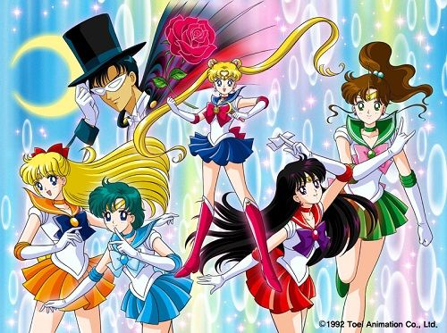

세라,결혼하다
2019.06.10
서로 첫눈에 반햇다거나 한쪽이 열렬히 쫕아다닌 끝에 연애를 하게 된것이 아니라,처음에는 전혀 친하지도 않았다가 온같 역경을 극복하고 서로의 정체를 조금씩 발견해가면서 서서히 가까워졌다는 점 역시 특기할 만한 사실입니다.
여러차례 마주치면서 점차 정이 들어갔고, 사실은 그들이 세일러 문과 턱시도 가면이라는 것을,그리고 세레니티와 엔디미온이라는 것을 알게 되었으며, 결국에는 서로 마모쨩과우사코라고 부르며 닭털을 풀풀 날리는 커플로 발전했습니다.세일러문은 스스로 사랑과 정의의 전사라고 소개했고,결국 자신의 사랑과 정의를 모두 지켜낸 영웅이 된 세라는 결혼을 하게 됩니당.축축
달의요정,세일러문 소개
2019.06.10

덜렁대고 울보에다가 잠꾸러기인 중학생 소녀 우사기는 어느날 학교에 가던 중 초승달 무늬가 이마에 그려져 있는 검은 고양이 루나를 만난다. 루나는 우사기야 말로 달의 프린세스를 찾아낼 전사라고 하고, 덕분에 우사기는 세일러 전사인 세일러 문으로 변신하여 악의 무리들과 싸우기 시작한다.
우사기는 악당과의 싸움을 치르며 동료 세일러 머큐리를 시작으로 마스, 쥬피터, 비너스를 차례로 만나게 된다. 또한 세일러문으로서 싸움을 시작한 첫날부터 자신을 도와준 턱시도 가면을 연모하게 된다.
광고1
- link1
- link2
- link3
- link4
- link5
광고2
- link1
- link2
- link3
- link4
- link5